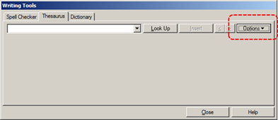
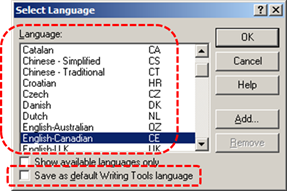
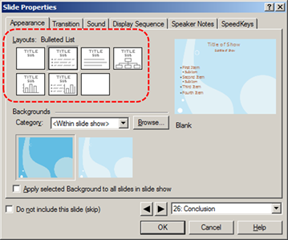
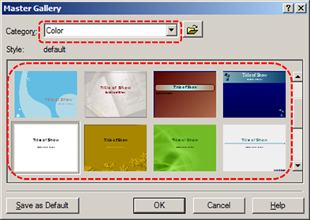
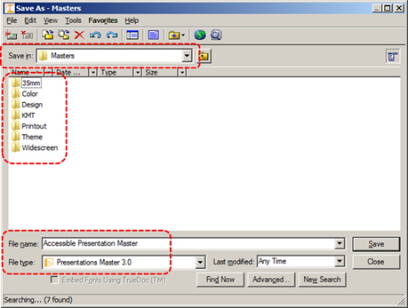
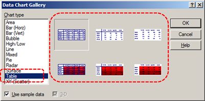
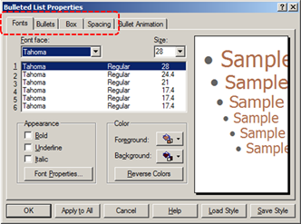
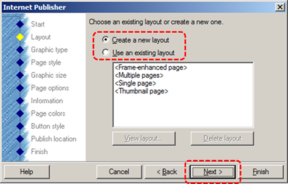

Authoring Techniques for Accessible Office Documents: Corel Presentations X5
Date of Current Version: 04 Feb 2011
Latest Version (HTML): http://inclusivedesign.ca/accessible-office-documents/presentationsx5
Quick Reference
- Usage Notes
- Technique 1. Use Accessible Templates
- Technique 2. Set Document Language
- Technique 3. Use Built-In Layout and Styling Features
- Technique 4. Set a Logical Tab Order
- Technique 5. Use Slide Notes
- Technique 6. Provide Text Alternatives for Images and Graphical Objects
- Technique 7. Use Built-In Structuring Features
- Technique 8. Create Accessible Charts
- Technique 9. Make Content Easier to See
- Technique 10. Make Content Easier to Understand
- Technique 11. Check Accessibility
- Technique 12. Use Accessibility Features when Saving/Exporting to Other Formats
- Technique 13. Consider Using Accessibility Support Applications/Plugins
- Accessibility Help
- References and Resources
- Acknowledgments
Usage Notes
At the time of testing (September 20, 2010), Presentations X5 lacks several features that enable accessible office document authoring, most notably: the ability to add alternative text to images and objects, the ability to create your own accessible templates, indicate natural language for selected text, quick styles or named styles, edit hyperlink text, and change tracking. As a result, some of the other features that might otherwise support accessibility, such as its extensive templates are not as effective. In addition, Presentations X5 does not include an accessibility checking feature, which is a more advanced accessibility feature.
What’s an “Office Document”?
You should use these techniques when you are using Presentations X5 to create documents that are:
- Intended to be used by people (i.e., not computer code),
- Text-based (i.e., not simply images, although they may contain images),
- Fully printable (i.e., where dynamic features are limited to automatic page numbering, table of contents, etc. and do not include audio, video, or embedded interactivity),
- Self-contained (i.e., without hyperlinks to other documents, unlike web content), and
- Typical of office-style workflows (Reports, letters, memos, budgets, presentations, etc.).
If you are creating forms, web pages, applications, or other dynamic and/or interactive content, these techniques will still be useful to you, but you should also consult the W3C-WAI Web Content Accessibility Guidelines (WCAG 2.0) because these are specifically designed to provide guidance for highly dynamic and/or interactive content.
File Formats
The default file format for Presentations X5 is Presentations Slide Show (SHW).
In addition, Presentations X5 offers many other presentation processor and web format saving options. Most of these have not been checked for accessibility, but some information and/or instructions are available for the following formats in Technique 12:
- MS PowerPoint (PPT)
- HTML
Document Conventions
We have tried to formulate these techniques so that they are useful to all authors, regardless of whether they use a mouse. However, for clarity there are several instances where mouse-only language is used. Below are the mouse-only terms and their keyboard alternatives:
- *Right-click: To right-click with the keyboard, select the object using the Shift+Arrow keys and then press either (1) the “Right-Click” key (some keyboard have this to the right of the spacebar) or Shift+F10.
Disclaimer and Testing Details:
Following these techniques will increase the accessibility of your documents, but it does not guarantee accessibility to any specific disability groups. In cases where more certainty is required, it is recommended that you test the office documents with end users with disabilities, including screen reader users.
The application-specific steps and screenshots in this document were created using Corel Presentations X5 (ver. 15.0.0.357, Windows XP, Sept. 2010) while creating a document in Presentation Slide Show format. Files are also easily saved as other file formats (see Technique 12).
Technique 1. Use Accessible Templates
At this time, it is not possible to create your own accessible templates in Presentations X5. [Tested September 15th, 2010] When using the pre-existing templates it is important to ensure that you modify any inaccessible aspects of the template while editing in your document.
All office documents start with a template, which can be as simple as a blank standard-sized page or as complex as a nearly complete document with text, graphics and other content. For example, a “Meeting Minutes” template might include headings for information relevant to a business meeting, such as “Actions” above a table with rows to denote time and columns for actions of the meeting.
Because templates provide the starting-point for so many documents, accessibility is critical. If you are unsure whether a template is accessible, you should check a sample document produced when the template is used (see Technique 11).
Presentation X5’s default template for new documents is a blank presentation. If you are connected to the internet, you can access a variety of blank business presentation templates. These are all accessible by virtue of being blank. As well, you may create your own templates.
Technique 2. Set Document Language
At this time, it is not possible to indicate the natural language for selected text in Presentations X5. [Tested September 15th, 2010]
In order for assistive technologies (e.g., screen readers) to be able to present your document accurately, it is important to indicate the natural language of the document. If a different natural language is used for a paragraph or selected text, this also needs to be clearly indicated.
To change the default language for the document
- Go to menu item: Tools > Thesaurus
- In the Writing Tools dialog, select Options

- Select Language…
- In the Select Language dialog, select a language from the scrolling list
- Click OK >

- In the Writing Tools dialog, click Close
Technique 3. Use Built-In Layout and Styling Features
Presentations X5 does not provide "True Headings" or "Named Styles" as does WordPerfect X5.
3.1 Use Built-In Slide Layouts
Instead of creating each slide in your presentation by starting from a blank slide, check whether there is a suitable built-in layout.
Note: The built-in layouts can be more accessible to users of assistive technologies because they technologies sometimes read the floating items on the slide in the order that they were placed on the slide. The built-in layouts have usually taken this into account (e.g., “Title” first followed by other items, left to right and from top to bottom). If you create slide layouts from scratch, it is sometimes difficult to keep track of the order elements were placed.
To apply “true layout” to a slide
- Go to menu item: Format > Layout Gallery
- In the Slide Properties dialog, select the Appearance tab
- In the Layouts section, select a layout from the layout icons
- Click OK

3.2 Customize Using Master Slides
If a layout must be customized, it is recommended that Master Slides be used.
Every slide layout in a presentation is defined by its master slide. A master slide determines the formatting style for various elements of the slide layout. This includes font styles, character formatting, and the positioning of elements. Essentially, each master slide acts as a design template for the slide layout.
If you edit any aspect of the slide layout in the master slide, the change will affect all slides that were created based on it. For this reason, it is good practice to edit the master slide and use the slide layouts before building individual slides. It is essential that you create and use master slides that meet the accessibility requirements outlined in this document.
To create or customize a master slide
- Go to menu item: Format > Master gallery
- In the Category list box, select a slide show category
- Select a master from the scrolling gallery
- Click OK

- Your selected master slide appears
- Customize the master slide to suit your needs (e.g., apply a design, theme-based colors, fonts, effects, backgrounds) ensuring that your changes meet accessibility requirements
Note: To create your own master slide from scratch by customizing a master slide from the default blank presentation, follow the next step. - Go to menu item: File > Save As
- In the Save in list box, choose X:\Program Files\Corel\WordPerfect Office X5\Languages\EN\Masters
Note: “X” represents the drive on which Presentations X5 is stored. - Double-click the relevant Master category folder
- In the File type list box, select either Presentations Master 3.0 or Presentations Master 7-X5
- In the Filename box, type a file name
Note: Including the term “accessible” in the file name will promote its status as an accessible master slide. - Click Save

Technique 4. Set a Logical Tab Order
Many presentation applications create content composed almost exclusively of "floating" objects. This means that they avoid the transitions between in-line content and secondary "floating" objects (text boxes, images, etc.) that can cause accessibility issues in word processors.
However, when you are working with "floating" objects, it is important to remember that the way objects are positioned in two dimensions on the screen may be completely different from how the objects will be read by a screen reader or navigated using a keyboard. The order that content is navigated sequentially is called the "Tab Order" because often the "Tab" key is used to navigate from one "floating" object to the next.
Tips for setting a logical “tab order” for "floating" objects
- The tab order of floating objects is usually from the “lowest” object on the slide to the “highest”.
- Because objects automatically appear “on top” when they are inserted, the default tab order is from the first object inserted to the last. However, this will change if you use features such as “bring to front” and “send to back”.
- The slide’s main heading should be first in the tab order.
- Headings should be placed in the tab order immediately before the items (text, diagrams, etc.) for which they are acting as a heading.
- Labels should be in the reading order placed immediately before the objects that they label.
- For simple slide layouts, it may be possible to simply insert objects in a logical tab order.
- For more complex layouts, it may be easier to simply to create the slide as usual and then set the tab order (see below).
To set the tab order
- Select the object
- Go to menu item: Edit > Arrange > Order > To Front, To Back, Forward One, or Back One
Technique 5. Use Slide Notes
A useful aspect of presentation applications is the facility to add notes to slides, which can then be read by assistive technologies. You can use these slide notes to explain and expand on the contents of your slides in text format. Slide notes can be created as you build your presentation.
To add notes to your slides
- Go to menu item: Format > Slide properties > Speaker notes
- In the Slide Properties dialog, enter text in the box to accompany the slide
- Select OK
Technique 6. Provide Text Alternatives for Images and Graphical Objects
At this time, it is not possible to add alternative text or longer descriptions to images and graphical objects inserted into Presentations X5 documents. [Tested September 15th, 2010]
When using images or other graphical objects, such as charts and graphs, it is important to ensure that the information you intend to convey by the image is also conveyed to people who cannot see the image. This can be accomplished by adding concise alternative text of each image. If an image is too complicated to concisely describe in the alternative text alone (artwork, flowcharts, etc.), provide a short text alternative and a longer description as well.
Tips for writing alternative text
- Try to answer the question "what information is the image conveying?"
- If the image does not convey any useful information, leave the alternative text blank
- If the image contains meaningful text, ensure all of the text is replicated
- Alternative text should be fairly short, usually a sentence or less and rarely more than two sentences
- If more description is required (e.g., for a chart or graph), provide a short description in the alternative text (e.g., a summary of the trend) and more detail in the long description, see below
- Test by having others review the document with the images replaced by the alternative text
Tips for writing longer descriptions
- Long descriptions should be used when text alternatives (see above) are insufficient to answer the question "what information is the image conveying?"
- In some situations, the information being conveyed will be how an image looks (e.g., an artwork, architectural detail, etc.). In these cases, try to describe the image without making too many of your own assumptions.
- One approach is to imagine you are describing the image to a person over the phone
- Ensure that you still provide concise alternative text to help readers decide if they are interested in the longer description
Alternatively, you can include the same information conveyed by the image within the body of the document, providing the images as an alternate to the text. In that case, you do not have to provide alternate text within the image.
Technique 7. Use Built-In Structuring Features
7.1 Tables
When using tables, it is important to ensure that they are clear and appropriately structured. This helps all users to better understand the information in the table and allows assistive technologies (e.g., screen readers) to provide context so that the information within the table can be conveyed in a meaningful way.
Tips for tables
- Only use tables for tabular information, not for formatting.
- Use “real tables” rather than text formatted to look like tables using the TAB key or space bar. These will not be recognized by assistive technology.
- Keep tables simple by avoiding merged cells and dividing complex data sets into separate smaller tables, where possible.
- If tables split across pages, set the header to show at the top of each page. Also set the table to break between rows instead of in the middle of rows.
- Create a text summary of the essential table contents. Any abbreviations used should be explained in the summary.
- Table captions or descriptions should answer the question "what is the table's purpose and how is it organized?" (e.g., "A sample order form with separate columns for the item name, price and quantity").
- Table cells should be marked as table headers when they serve as labels to help interpret the other cells in the table.
- Table header cells labels should be concise and clear.
- Ensure the table is not “floating” on the page (see Technique 4).
To add a table with headings
- Go to menu item: Insert > Data Chart
- Click a location on the slide to insert the table
- In the Data Chart Gallery dialog, select Table from the Chart type list
- Select a table style from the icons in the center of the Data Chart Gallery dialog
- Click OK

- In the Datasheet dialog, double-click the cells in the first row
- In the Edit Current Cell dialog, enter your heading into the Data text box
- Click OK
- Close the Datasheet dialog after updating it with data for your table
7.2 Lists
When you create lists, it is important to format them as “real lists”. Otherwise, assistive technologies will interpret your list as a series of short separate paragraphs instead of a coherent list of related items.
To create an ordered or unordered list
- Select the text box or highlight the text
- Go to menu item: Format > Bulleted List Properties…
Note: If the text box is a Title or Subtitlebox, go to menu item: Format > Title Properties… or Format > Subtitle properties… - In the Bulleted List dialog, select the appropriate tabs and make your adjustments
Note: Avoid applying bullet animation by avoiding the Bullet Animation tab (see Technique 9.5).
- Select OK to apply to that text box, or select Apply to All to apply these list properties to all text objects in the presentation
7.3 Columns
Use Columns feature for placing text in columns.
Note: Because columns can be a challenge for users of some assistive technologies, consider whether a column layout is really necessary.
7.4 Document Title
In case the document is ever converted into HTML, it should be given a descriptive and meaningful title.
To change the title of the current document
- Go to menu item: File > Properties…
- In the Title box, type a descriptive name for the document
Note: The Title defined in the properties is different than the file name. It is also unrelated to the template name, discussed above. - Click OK
Technique 8. Create Accessible Charts
Charts can be used to make data more understandable for some audiences. However, it is important to ensure that your chart is as accessible as possible to all members of your audience. All basic accessibility considerations that are applied to the rest of your document must also be applied to your charts and the elements within your charts. For example, use shape and color, rather than color alone, to convey information. As well, some further steps should be taken to ensure that the contents are your chart are appropriate labeled to give users reference points that will help them to correctly interpret the information.
To create a chart
- Select a slide layout with a placeholder for a data chart (see Technique 3.1)
- Double-click* to the center of the placeholder to add a data chart
- In the Data Chart Gallery, select a Chart type and style
- Select OK
- Update the Datasheet with the data you would like to display in the chart
- Close the Datasheet
To add titles and labels
- Right-click* the chart and select Display Title, Display Subtitle, Display Legend, and Display Labels
- Go to menu item: Chart > Title…
- In the Title Properties dialog, ensure the Display chart title check box is selected
- Enter a title in the Display chart title text box and select OK
- Go to menu item: Chart > Subtitle…
- In the Subtitle Properties dialog, ensure the Display chart subtitle check box is selected
- Enter a subtitle in the Display chart subtitle text box and select OK
- Go to menu item: Chart > Legend…
- In the Legend Properties dialog, use the selections to format the legend
- In the Legend title text box, enter a title for the legend and select OK
- Go to menu item: Chart > Data Labels…
- In the Data Labels dialog, use the selections to format the data labels
- Ensure the Display data labels check box is selected
- Select OK
To change to a different predefined Chart Type
- Select the chart
- Go to menu item: Chart > Layout/Type
- In the Layout/Type Properties dialog, select a chart from the Chart type drop-down list
- Select a Style and format the Appearance
- Select OK
Other Chart Considerations
- When creating line charts, use the formatting options to create different types of dotted lines to facilitate legibility for users who are color blind
- When creating bar charts, it is helpful to apply texture instead of color to differentiate the bars
- Change the default colors to a color safe or gray-scale palette
- Use the formatting options to change predefined colors, ensuring that they align with sufficient contrast requirements (see Technique 9.2)
Technique 9. Make Content Easier to See
9.1 Format of Text
When formatting text, especially when the text is likely to printed, try to:
- Use font sizes between 12 and 18 points for body text.
- Use fonts of normal weight, rather than bold or light weight fonts. If you do choose to use bold fonts for emphasis, use them sparingly.
- Use standard fonts with clear spacing and easily recognized upper and lower case characters. Sans serif fonts (e.g., Arial, Verdana) may sometimes be easier to read than serif fonts (e.g., Times New Roman, Garamond).
- Avoid large amounts of text set all in caps, italic or underlined.
- Use normal or expanded character spacing, rather than condensed spacing.
- Avoid animated or scrolling text.
But can’t users just zoom in?Office applications do typically include accessibility features such as the ability to magnify documents and support for high contrast modes. However, because printing is an important aspect of many workflows and changing font sizes directly will change documents details such the pagination, the layout of tables, etc., it is best practice to always format text for a reasonable degree of accessibility.
9.2 Use Sufficient Contrast
The visual presentation of text and images of text should have a contrast ration of at least 4.5:1. To help you determine the contrast, here are some examples on a white background:
- Very good contrast (Foreground=black, Background=white, Ratio=21:1)
- Acceptable contrast (Foreground=#767676, Background=white, Ratio=4.54:1)
- Unacceptable contrast (Foreground=#AAAAAA, Background=white, Ratio=2.32:1)
Also, always use a single solid color for a text background rather than a pattern.
In order to determine whether the colors in your document have sufficient contrast, you can consult an online contrast checker, such as:
- Juicy Studio: Luminosity Color Contrast Ratio Analyzer
- Joe Dolson Color Contrast Spectrum Tester
- Joe Dolson Color Contrast Comparison
9.3 Avoid Using Color Alone
Color should not be used as the only visual means of conveying information, indicating an action, prompting a response, or distinguishing a visual element. In order to spot where color might be the only visual means of conveying information, you can create a screenshot of the document and then view it with online gray-scale converting tools, such as:
9.4 Avoid Relying on Sensory Characteristics
The instructions provided for understanding and operating content should not rely solely on sensory characteristics such as the color or shape of content elements. Here are two examples:
- Do not track changes by simply changing the color of text you have edited and noting the color. Instead use PowerPoint 2010’s “Track Changes” feature to track changes.
- Do not distinguish between images by referring to their appearance (e.g. “the bigger one”). Instead, label each image with a figure number and use that for references.
9.5 Avoid Using Images of Text
Before you use an image to control the presentation of text (e.g., to ensure a certain font or color combination), consider whether you can achieve the same result by styling “real text”. If this is not possible, as with logos containing stylized text, make sure to provide alternative text for the image following the techniques noted above.
9.6 Avoid Transitions
Transitions between slides and elements in each slide (e.g., bullets in a list flying onto the screen) can be distracting to users with disabilities. It can also cause assistive technologies to read the slide incorrectly. For these reasons, it is best to avoid transitions altogether.
Technique 10. Make Content Easier to Understand
10.1 Write Clearly
By taking the time to design your content in a consistent way, it will be easier to access, navigate and interpret for all users:
- Whenever possible, write clearly with short sentences.
- Introduce acronyms and spell out abbreviations.
- Avoid making the document too “busy” by using lots of whitespace and by avoiding too many different colors, fonts and images.
- If content is repeated on multiple pages within a document or within a set of documents (e.g., headings, footings, etc.), it should occur consistently each time it is repeated.
10.2 Provide Context for Hyperlinks
At this time, Presentations X5 does not provide a mechanism for inserting hyperlinks or editing their text. [Tested September 16th, 2010]
Hyperlinks are more effective navigation aids when the user understands the likely result of following the link. Otherwise, users may have to use trial-and-error to find what they need.
To help the user understand the result of selecting a hyperlink, ensure that the link makes sense when read in the context of the text around it. For example, while it would be confusing to use “more information” as a link by itself on a page, it would be fine to use “more information” as a link in the following sentence: “The airport can be reached by taxi or bus (more information).”
To make the address of hyperlink clear when printing, you may wish to include the address in brackets following the descriptive text of the hyperlink.
10.3 Accessible Presentations
It is important to consider accessibility before, during, and after presentations. Below is a helpful link with guidance on how to make presentations accessible to all:
- “How to Make Presentations Accessible to All” (Source: W3C-WAI Draft)
Technique 11. Check Accessibility
At this time, Presentations X5 does not offer a mechanism for accessibility checking to identify potential accessibility errors prior to publishing. [Tested: September 20th, 2010]
In order to get some indication of the accessibility of your document or template (see Technique 1), then you may consider saving the file into HTML or PDF in order to perform an accessibility check in one of those formats, as described below.
To evaluate HTML accessibility
If you wish to check the accessibility of your document or template (see Technique 1), one option is to save it into HTML format and use one of the web accessibility checkers available online. Such as:
To evaluate PDF accessibility
If you saved your document in tagged PDF format, you can use the following tools and steps to evaluate the accessibility of the PDF document:
- Adobe Acrobat Professional
- PDF Accessibility Checker (PAC) – a free alternative provided by “Access for all”
To evaluate PDF accessibility in Adobe Acrobat Professional
- Go to menu item: Advanced > Accessibility > Full Check…
- In the Full Check dialog, select all the checking option
- Select the Start Checking button
Technique 12. Use Accessibility Features when Saving/Exporting to Other Formats
In some cases, additional steps must be taken in order to ensure accessibility information is preserved when saving/exporting to formats other than the default.
PDF documents are not always accessible. Accessible PDF documents are often called “Tagged PDF” because they include “tags” that encode structural information required for accessibility. To evaluate the accessibility of your PDF document, see Technique 11.
- Go to menu item: File > Publish to PDF…
- In the Publish to PDF dialog, select the drive and folder you want to save the file in
- Type a meaningful file name in the Filename box
- In the PDF Style drop-down menu, select PDF/A-1b – Level B compliance
- In the Publish to PDF dialog, select Settings…
- In the Publish to PDF Settings dialog, select the General tab
- In the Export range section, select Full document
- Select the Document tab
- In the Bookmarks section, select Generate bookmarks
- Select the Advanced tab
- Select Optimize for Web
- Select OK
- In the Publish to PDF dialog, select Save
Note: If errors are found in the file, a warning message appears. You can view the errors in the generated log file.
HTML
- Go to menu item: File > Publish To > Internet Publisher…
- The Internet Publisher wizard starts, click Next
- Enable Create a new layout or Use an existing layout and choose a layout from the list
- Follow the instructions to choose the formatting options for the slide show, clicking Next after completing each section

- Click Finish
- Check the HTML file for accessibility (see Technique 11)
To clean up your HTML file
- Remove unnecessary styles, line breaks, etc.
- Remove unnecessary id, class, and attributes
- Remove font tags
- Remove styles in the <head> tag
- Ensure the <th> tags have a scope attribute
- Remove <p> tags nested inside <th> and <td> tags
- Check for accessibility (see Technique 11)
Note: you may wish to use HTML editors or utilities to help with this process.
Technique 13. Consider Using Accessibility Support Applications/Plugins
Disclaimer: This list is provided for information purposes only. It is not exhaustive and inclusion of an application or plug-in on the list does not constitute a recommendation or guarantee of results.
The following accessibility related plug-ins and support are available for Presentations X5:
- PowerTalk – an accessibility tool that provides a good approximation of how presentations will sound with a screen reader.
- HiSoftware – desktop add-ins that will create a Section 508 or WAI Fully Compliant Web pages from PowerPoint presentations (some knowledge of HTML code is required).
Accessibility Help
If you are interested in what features are provided to make using Presentations X5 more accessible to users, documentation is provided in the Help system:
- Go to menu item: Help > Help Topics… (F1)
- Select the Search tab in the left pane
- Enter “accessibility features” as your search term in the search box
References and Resources
- Presentations X5 Help Guide
- GAWDS Writing Better Alt Text [http://www.gawds.org/show.php?contentid=28]
Acknowledgments
This document was produced as part of the Accessible Digital Office Document (ADOD) Project (http://inclusivedesign.ca/accessible-office-documents).
This project has been developed by the Inclusive Design Research Centre, OCAD University as part of an EnAbling Change Partnership project with the Government of Ontario and UNESCO (United Nations Educational, Scientific and Cultural Organization).


Accessible Digital Office Documents (ADOD) Project by Inclusive Design Research Centre (IDRC) is licensed under a Creative Commons Attribution-ShareAlike 3.0 Unported License.